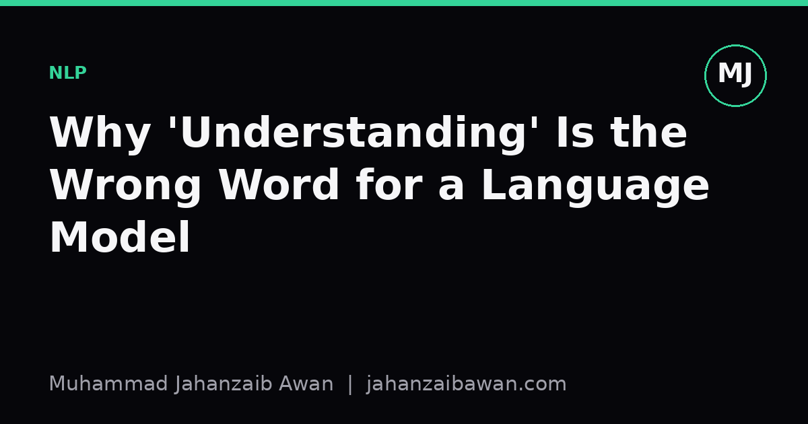

Why 'Understanding' Is the Wrong Word for a Language Model
We borrow a human word for a mind we do not have, and the borrowing quietly distorts how we test, trust, and talk about these systems.

A word doing too much work
I notice myself reaching for 'understanding' constantly when I talk about language models, and I think the word is doing more work than it has earned. When I say a model 'understands' a sentence, I am importing an entire bundle of assumptions from human cognition: that there is a subject who grasps meaning, holds beliefs about the world, and could in principle explain why it answered the way it did. None of that bundle is established by the fact that a model produced a fluent, correct-looking response.
This matters because the word shapes expectations, and expectations shape how we evaluate. If I believe a model understands arithmetic, I expect it to generalise the way a person who understands arithmetic would: correctly on numbers it has never seen, in whatever format I pose them. If instead I treat the model as a very good pattern completer trained on a particular distribution of text, I expect something narrower and more fragile. Those are different predictions, and only one of them tends to survive careful testing.
The honest description is closer to this: a language model is a function that has learned, from an enormous amount of text, which sequences of tokens tend to follow other sequences, and it uses that learned statistical structure to produce plausible continuations. That is not nothing. It is a remarkable compression of regularities in language and, indirectly, in the world that language describes. But it is a different kind of achievement from 'understanding' in the sense we mean when we say a student understands photosynthesis.
A worked example: the three-digit multiplication test
Suppose I want to check whether a model 'understands' multiplication. I give it ten problems like 47 times 83, and it gets eight of them right. A natural reading is: it understands multiplication reasonably well, with a bit of noise. But a more careful test tells a different story.
Say I now generate one thousand pairs of three-digit numbers, stratified so that the digit patterns are not skewed towards anything common in training data, and I separate my test pairs so that none of them, or minor variants of them, could plausibly have appeared verbatim in the training corpus. The accuracy on this leakage-aware set might drop to, say, sixty per cent, and the errors are not randomly scattered: they cluster around specific carry patterns, or around numbers with repeated digits, or around a particular magnitude range. A person who understands the multiplication algorithm does not fail in that structured way; they might be slow or make an occasional slip, but their errors would not cluster around 'numbers containing a 7 in the tens place'.
That clustering is the tell. It suggests the model has learned a dense set of overlapping heuristics and memorised fragments that approximate the algorithm well in regions densely covered by training data, and poorly outside them. 'Understanding multiplication' predicts smooth, algorithm-like generalisation. 'Learned a statistical approximation of multiplication from examples' predicts exactly the patchy, pattern-dependent failure we actually see. The second description is not just more cautious, it is more accurate, because it generates the right prediction about where things break.
This is why I think the vocabulary question is not pedantic. If a team reports that their model 'understands' a task because it scored well on a benchmark, and the benchmark happens to share surface structure with the training set, the word 'understanding' has quietly done the job of hiding a leakage problem. Swap in 'learned a statistical mapping that performs well on this distribution' and the next question asks itself: well on what distribution, exactly, and how different is the test set really?

What better words buy us
Using more precise language is not about being pedantic for its own sake; it changes what we go and measure. 'Understanding' invites us to ask whether the model is right or wrong in some global sense. 'Learned statistical structure' invites us to ask where the structure came from, how it was estimated, and under what distribution shift it will stop holding. Those are testable, falsifiable questions, and they are the ones that actually predict deployment failures.
It also changes how we read impressive demonstrations. A model producing a fluent, well-reasoned-looking explanation for its own answer feels like strong evidence of understanding, because in humans, the ability to explain usually correlates with the ability to apply the knowledge flexibly. In a language model, the explanation is generated by the same next-token process as the answer, so it is not independent evidence; it is another sample from the same distribution that produced the possibly wrong answer in the first place. Treating a fluent explanation as confirmation of understanding is a category error that more careful vocabulary helps guard against.
None of this is an argument that language models are useless or that their capabilities are illusory; the multiplication example still got sixty per cent right on a hard, leakage-controlled set, which is a genuinely useful capability worth characterising properly. The argument is narrower: describe the capability in terms of what was learned, from what data, under what test conditions, rather than borrowing a word built for minds with beliefs, goals, and the capacity to notice their own errors.
My practical rule, and the one I would recommend to anyone evaluating these systems, is to replace 'does it understand X' with three smaller questions: what distribution was it trained on, how different is my test set from that distribution, and does performance degrade gracefully or catastrophically as that distance grows. Answering those three tells you almost everything 'understanding' was pretending to summarise, and it tells you without the risk of smuggling in a claim you cannot actually support.